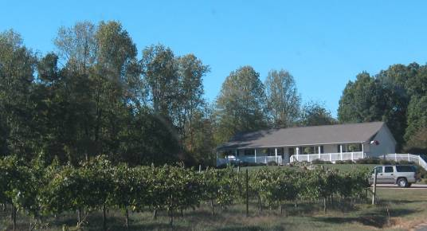

|
North America >
USA >
North Carolina >
Yadkin Valley >
Windy Gap Vineyards

Windy Gap Vineyards
Ronda, NC
Windy Gap was one of the first wineries established in the Yadkin Valley in 1996, however they went out of business in late 2007.
Vintages:
Chardonel Yadkin Valley
2004
Three Dawg Nite
NV
|